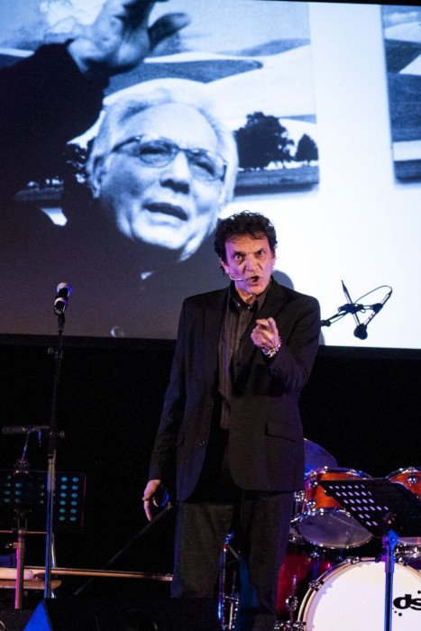

Osvaldo Ardenghi, durante il pezzo comico “l'alternativa”. Autore e attore, partecipò in teatro, con Bove e Limardi in una commedia scritta e diretta da Enzo Jannacci: "la storia del mago".
Musicista di chitarra finger picking, con il gruppo i “Rusties” porta in scena cover di Neil Young e spettacoli nei quali suona pezzi di sua composizione anche dialettali.
Fu scoperto in un provino presso il Bolgia Umana da Enzo Jannacci che ne esaltò la vena comica.
Qualche tempo dopo Enzo Jannacci gli confidò di essere stato colpito da una battuta, recitata a nome dei Re Magi, nel “Nazareno”: ci dovremmo chiedere tutti: si, ma che fine ha fatto l'oro !
